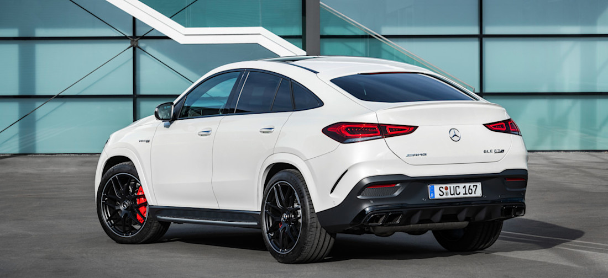

Novità

Price:92.000$
Characteristics:he Mercedes-AMG GLE 63 S V8 (2025/2026 models) features a Handcrafted 4.0L V8 biturbo engine, producing 603-612 horsepower and 850 Nm (\(627\text{\ lb-ft}\)) of torque, enhanced by a mild-hybrid system . It accelerates from 0-60 mph in 3.7–3.9 seconds, utilizing a 9-speed automatic transmission, 4MATIC+ all-wheel drive, and advanced active ride contro